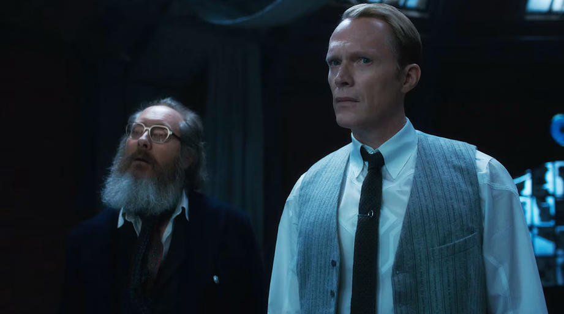
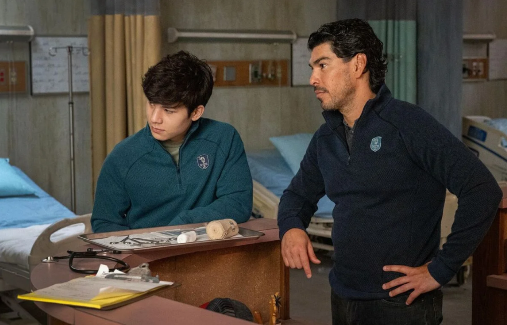

就在11月5日，漫威《幻视任务》中的"幻视"扮演者保罗·贝坦尼官宣加盟Netflix新剧《Pagans》（中文译名《异端邪念》），而和他对戏的男主角，是凭《怒呛人生》拿下艾美奖、又靠《米纳里》提名奥斯卡的史蒂文·元。

消息一出，不少人第一反应是：这剧到底什么来头？
2025年，编剧约书亚·祖特曼（Joshua Zetumer）写了一个剧本，结果好莱坞十几家买家抢着要。为了保密，剧本被锁在一个特殊App里，潜在买家只能看一天。最终Netflix拿下，直接跳过试播集，整季预订。
敢这么豪赌，是因为手里的牌确实硬。主创约书亚·祖特曼是拿过皮博迪奖的《Say Nothing》（《无声风暴》）编剧，Drew Goddard（《科洛弗道10号》《皇家酒店谋杀案》）等一串金牌制作人坐镇，史蒂文·元本人也参与监制。
那么故事讲了什么？
史蒂文·元饰演的父亲格斯，在妻子悲剧离世后，独自照顾一双儿女。儿子正常开朗，女儿爱丽丝却一点也不寻常。父女之间原本紧绷的关系，一步步滑向令人毛骨悚然的深渊。官方一句话概括：它一半催泪、一半惊悚、一半黑色幽默，挖的是每个家庭心里最阴暗的那些念头。
这不是普通的家庭剧，而是披着家庭外衣的恐怖故事。
再来看一下阵容：
史蒂文·元饰演父亲格斯（Gus），丧妻后独自拉扯两个孩子的单亲爸爸。
洛根·金饰演儿子内特（Nate），一个讨人喜欢、靠谱的孩子，但从小到大都活在妹妹爱丽丝的阴影里，总觉得自己在家里像个事后才被想起的人。
饰演女儿爱丽丝的是萨宾·格雷斯（Sabine Grace），这是她的电视首秀。爱丽丝被形容为家里的“黑羊”，跟世界保持距离，大部分时间活在自己脑子里，跟父亲格斯的关系相当紧张。
另外，玛丽恩·爱尔兰（Marin Ireland） 饰演珍妮尔，另一位单亲妈妈，正努力跟自己意志坚强的14岁女儿杰德搞好关系。
仁泰·金 饰 格斯的弟弟凯西，家里有事就出现，哪怕没人说一句谢谢。
保罗·贝坦尼的角色目前严格保密，只知道是和史蒂文·元对戏的关键人物。
而对《行尸走肉》的老粉来说，这剧藏着一个让人鼻子一酸的彩蛋。
史蒂文·元在《行尸走肉》里演的格伦，早在第七季开场就被尼根打死，至死都没见过自己的儿子赫谢尔。玛吉独自把孩子拉扯大，父子俩在丧尸宇宙里一辈子没碰过面。而演赫谢尔的演员洛根·金，这次在《异端邪念》里终于和"格伦"演上了父子。只可惜这一次，这个家并不温馨，反而暗流汹涌。

目前剧集还没有定档，也没有预告，甚至制作尚未启动，业内推测最快也要2027年下半年才能上线。可以确认的是：项目已由Netflix拿下、主创与两位主演已经到位。